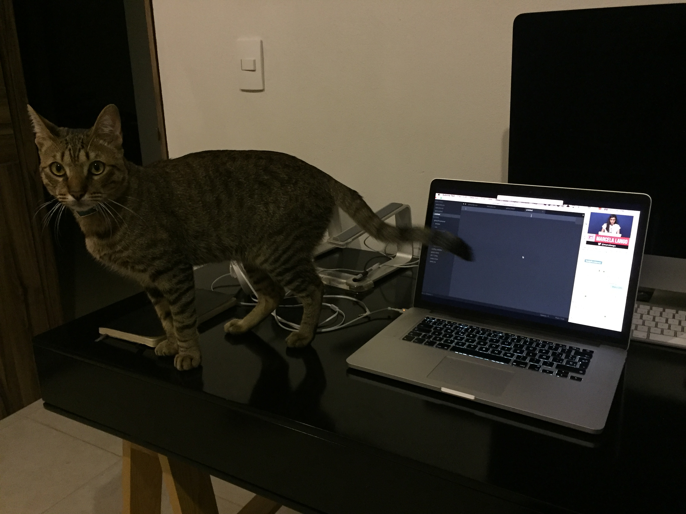

Git, el gato

Raza
Doméstico MexicanoColor
AtigradoNacimiento
~30 de Octubre, 2014Descripción
Git el gato es un gato doméstico mexicano, que desafortunada o afortunadamente fue abandonado por su madre biológica. Fue rescatado por Maru Lango cuando regresaba a su casa de ver una película.
Disfruta de subirse a los escritorios y de llenar de pelo su sillón (Porque el sillón, al contrario de lo que sus humanos puedan pensar, es suyo)
Galería